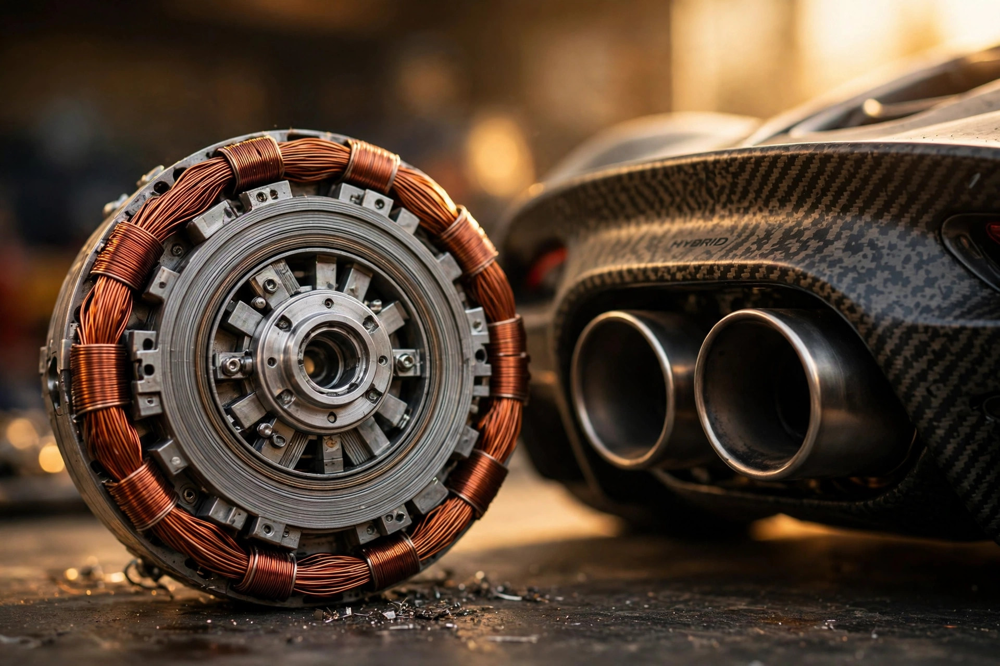

The 20-Kilogram Motor: Lotus's 1,000-HP Plan to Win the Hybrid Weight War

Lotus has given itself the hardest assignment in the supercar business. On an August 27 earnings call, CEO Qingfeng Feng committed the company's 2028 flagship, the Type 135, to two numbers that refuse to share a sentence: more than 1,000 horsepower and less than 1,500 kilograms. For reference, the Ferrari 296 GTB makes 830 PS and weighs around 1,540 kg with its 7.45 kWh plug-in battery. Feng is promising roughly 170 more horsepower and 40 fewer kilograms. He is not pretending the math is friendly. "Achieving that target with an 800V architecture, a hybrid system, a V8 engine and electric motor in the car just is not easy," he told analysts.
His answer is the motor. A conventional 150 kW traction motor weighs up to 95 kg, which at 1.6 kW/kg is the kind of power density that makes hybrid systems the enemy of everything Colin Chapman stood for. Lotus says its F1-derived design trims that to about 20 kg. Same 150 kW, 75 kg gone, 7.5 kW/kg. Do the arithmetic on the whole car and the target starts to look less like fantasy: 1,000 PS divided by 1,500 kg is 0.67 PS per kilogram. A 296 GTB manages 0.54. A Lamborghini Temerario, 920 PS against 1,690 kg, also 0.54. If Lotus hits its numbers, the Esprit would carry the best power-to-weight ratio in its class by a distance. That "if" is doing heavy lifting, and we will come back to it.
The Weight Budget
Start with where hybrid mass actually lives. Three buckets: the engine, the motors, the battery. Lotus is attacking all three, and the interesting part is how little of the plan is exotic. Battery strategy is subtraction: the Type 135 will not be a plug-in hybrid. Ferrari's 296 GTB carries a 7.45 kWh pack; a Temerario carries 3.8 kWh. A hybrid-only buffer of roughly a kilowatt-hour weighs a fraction of either. Assume about 10 kg per kWh at pack level, a fair figure for current automotive pouch cells, and the delta between a 7.45 kWh plug-in pack and a roughly 1 kWh hybrid buffer lands near 60 kg. Sixty kilograms is not a rounding error on a 1,500 kg target. It is four percent of the car, deleted by a product decision rather than a materials breakthrough. No plug, no charger, no 7.45 kWh of cells to lug around. Electric-only range is the cost, which on a 1,000-PS supercar is a rounding error in the other direction. Nobody cross-shops these cars on a silent commute.
Then the motors. Feng's 95-to-20 kg claim deserves scrutiny because it is the single most aggressive number in the program. Seven and a half kilowatts per kilogram sits in axial-flux territory, the disc-shaped motors Feng himself was discussing when he told Auto Express he had spoken to Yasa's CEO "last week." Axial-flux machines earn that density with geometry: the magnetic flux runs parallel to the shaft across a short air gap, which raises torque per unit of mass and puts the copper windings where cooling can actually reach them. Yasa's machines are the reference class here: thin discs, very high power density, already in production for hybrid supercars. Whether Lotus builds its motors in-house or buys the technology, the claim is credible in the sense that the physics exists in shipping hardware. Ambitious in the sense that shipping hardware at 20 kg per 150 kW, inside a cost-constrained production car, is not the same as shipping it at all. Conventional radial-flux EV motors live around 1.5 to 2.5 kW/kg. Feng is asking for roughly four times that. Axial-flux can do it. Whether Lotus can do it at Lotus volumes and Lotus prices is the open question.
A third bucket is the engine, and here Lotus is doing something it has never done: commissioning its own. "What has truly limited us is the lack of a proper powertrain, because Lotus hasn't produced its own engine," Feng told Auto Express. Emira's two borrowed engines tell the story: a Mercedes-AMG turbo 2.0-litre making 360 or 400 bhp, or a supercharged Toyota V6 also making 400 bhp, differentiated mostly by character and a manual gearbox. "The problem is you have to compromise when sourcing from other suppliers: these two engines couldn't deliver the performance we intended for the Emira," Feng said. "My role is the chief cook, and I've now found the very last ingredient to make the perfect dish."
A V8 From Scratch, Built Everywhere
Horse Powertrain is the ingredient, the Geely-Renault joint venture, and Feng confirmed it directly when Automotive News Europe asked: "yes." Its brief is "starting from scratch," with volume and weight as explicit targets, and the plan is to build the engine globally, in China and Europe and possibly elsewhere. Here is the part that should make purists twitch: the same V8 family is expected to serve Geely's wider portfolio, including off-road SUVs. "In terms of sports cars, only Lotus will use it," Feng said, which reassures until you notice it concedes the engine's day job might be a sport-utility vehicle. A 1,000-PS supercar sharing its block with an SUV is either the triumph of modular engineering or the dilution of it. Lotus's answer is the top end: this V8 scales up from a 90-degree 3.0-litre twin-turbo V6 with integrated exhaust manifolds and an 8,000 rpm redline, and the V6 derivative is claimed at up to 536 bhp and 160 kg, which Feng calls the lightest in its class. Integrated manifolds and 8,000 rpm are not SUV specifications. They are the fingerprints of an engine whose real customer is Hethel.
Note the architecture choice hiding in that sentence. Ninety degrees is the natural V angle for a V8, and scaling a V6 up to a V8 from a common design keeps development cost sane while giving Lotus something it has lacked since 2004: more than six cylinders. The last Lotus with eight was the Esprit V8, dead for over two decades. Everything since has been borrowed four- or six-cylinder hardware. An in-house V8, even a shared one, ends the borrowing era. Whether the SUV-sharing matters depends on execution, and execution is the part no earnings call can demonstrate.
The Temerario on the Wall
Feng keeps naming his benchmark, which is unusual and revealing. "He namechecks the new Lamborghini Temerario," Auto Express reported, "which has twin motors turning the front axle and another sandwiched between the V8 and gearbox, combining for 907 bhp, less than the new Esprit." Read that again: a CEO doing competitive arithmetic in public. Temerario's three axial-flux motors come from Yasa, the British firm Mercedes-AMG acquired. Then Feng volunteers that he spoke to Yasa's CEO "last week," praising "disc-shaped motors that are extremely small in size but extremely powerful in output" and calling AMG's acquisition "a real smart move." This is supplier courtship conducted through the press. It is also a tell: Lotus knows exactly whose technology sets the bar, and it is negotiating in daylight.
Such a comparison flatters the Lotus strategy if the weight target holds. A Temerario's hybrid system is brilliant and heavy: 907 bhp hauling 1,690 kg. Lotus wants 1,000-plus bhp hauling 1,500 kg. Same hybrid playbook, 190 fewer kilograms. That is the entire bet, stated as plainly as a CEO ever states one. It is also worth noting what the Temerario comparison concedes: Lamborghini got there first, with the motors Feng admires, and Lotus is chasing. An Esprit's advantage, if it materializes, will be lightness, not novelty. Chapman would approve of the ordering.
All-Wheel Drive and a Chassis That Thinks
Power is only half the brief. Feng told Auto Express the Type 135 is likely to send its 1,000-plus bhp to all four wheels, which for Lotus is close to heresy. This company's religion has been rear-drive lightness since Chapman. But "all-wheel drive could be a great solution," Feng said, "with the help of torque control software, you can decide how much power you want to put to the front and rear wheels." His plan: all four corners driven on straights for acceleration, rear bias in corners for feel. This is the modern answer to the traction problem 1,000 bhp creates, and it only works if the software is excellent. Lotus is betting its E/E architecture, the group's centralized electronic nervous system, can make a 1,500 kg all-wheel-drive car feel like a Lotus. That is a software claim wearing a chassis claim's clothes.
Hardware underneath is a compound structure: a carbon-fibre tub, likely derived from the 2,011-bhp Evija hypercar's technology, with aluminium crash structures and running gear. Air suspension with continuously variable damping and active anti-roll bars will manage the mass in real time. "In the past, the chassis was fixed, frozen and acted in a passive way," Feng said. "Nowadays, chassis are becoming more dynamic." Active chassis hardware on a hybrid supercar is not novel. What is novel, or at least rare, is applying it in service of lightness rather than in compensation for weight. Most hybrid supercars use clever suspension to hide their mass. Lotus wants to use it to exploit the lack of it. Whether 1,500 kg counts as "lack of mass" is a question for anyone who remembers the sub-800 kg Elise. Progress is relative.
Esprit, Probably
About the name: Lotus has not officially confirmed it, but everyone involved is winking. The project is "internally referred to as the new Esprit," per Auto Express, and Feng told Automotive News Europe there is a "logical legacy connection" to the classic. A leaked file name referencing "Esprit" did the rest. The original ran from 1976 to 2004, Giorgetto Giugiaro's wedge, four generations, the submarine car from The Spy Who Loved Me. Feng's own first encounter was less glamorous: "it wasn't in the famous James Bond movie but Pretty Woman," he told Auto Express, recalling a silver 1989 Esprit SE with pop-up headlamps on Beverly Hills boulevards when he was a chemistry student. Reviving the name is the easy part. Making a 1,000-PS hybrid feel like the heir to a car famous for doing more with less is the actual job.
Design direction helps. The teaser shows a wide, clean rear: horizontal two-piece lights, two round exhausts, forged carbon on the lower bumper, no wings, no aero shouting. The 2024 Theory 1 concept's influence is visible in the haunches and the glass engine cover. After the Evija's aero-everything aggression, restraint is the statement. It also happens to be aerodynamic honesty: at this level, the fast air goes underneath, through the diffuser, not over a wing.
The Correction
Step back and the Type 135 is really about a strategy reversal. In May, Lotus published its Focus 2030 plan, scrapping the 2018 Vision80 commitment to go all-electric by 2028. "We are obsessed with engineering, obsessed with performance and obsessed with building drivers' cars," Feng said in the release, announcing a multi-powertrain future: combustion, hybrid, plug-in hybrid, EV, each aimed at the markets that want them. Context is brutal. Lotus set a 2024 sales record at 12,065 cars, then fell to 6,520 last year as US tariffs bit. Hethel lost 550 people. The Times reported a feasibility study on the Norfolk factory, with Feng conceding UK production costs run five to six times China's. Against that, a 1,000-PS halo car built at Hethel is either a statement of faith in British engineering or an expensive one. Feng told the Times the Type 135 will use "the MGU-K engine technology that made its debut in Formula 1 this season," the kinetic-recovery hardware from F1's new rules era. If the halo works, it justifies Hethel. If it does not, it is a very fast monument.
Limitations, Honestly
I have not seen the car beyond the teaser image, and neither has anyone outside Lotus. Every number here is a target stated on an earnings call or in an interview: 1,000-plus horsepower, 1,500 kg, 20 kg motors, 2028. Targets are not specifications, and the 95-to-20 kg motor claim in particular should be read as an engineering goal with a press release attached until hardware exists. An Esprit name is strongly hinted but unconfirmed. Production location is unconfirmed. The 160 kg V6 "lightest on the market" claim is Feng's; I have not audited every 3.0-litre V6. Battery-weight arithmetic is mine, built on two stated assumptions: roughly 10 kg per kWh at pack level, and a hybrid-only buffer of roughly 1 kWh. Power-to-weight comparisons use the reported figures cited below, mixing PS and bhp as the sources do. Everything else comes from the sources.
One more caveat. A V8's "starting from scratch" development at Horse Powertrain sits inside a joint venture whose business is scale, and Feng's own words put this engine in off-road SUVs elsewhere in the Geely empire. A bespoke-feeling supercar engine that shares its architecture with an SUV is a contradiction Lotus will have to engineer its way out of, one integrated exhaust manifold at a time.
Sources
- Auto Express, June 5, 2026, "Lotus Esprit comeback in new detail: all-wheel drive and 1,000bhp hybrid power for Type-135 supercar," exclusive interview with Qingfeng Feng at Lotus's Mayfair store: AWD, more than 1,000bhp V8 hybrid, all-new V8 commissioned from Horse Powertrain scaled from a 90-degree 3.0-litre twin-turbo V6 with integrated exhaust manifolds and 8,000rpm redline, V6 up to 536bhp at 160kg, Emira's engine limitations (Mercedes-AMG 2.0-litre 360/400bhp, supercharged Toyota V6 400bhp), MGU-K comparison, compound carbon-fibre and aluminium chassis, no plug-in hybrid, torque-control AWD with rear bias in corners, Temerario and Yasa namechecks, E/E architecture, air suspension with continuously variable damping and active anti-roll bars, teaser rear description. https://www.autoexpress.co.uk/lotus/357211/lotus-esprit-comeback-new-detail-all-wheel-drive-and-1000bhp-hybrid-power-type-135
- CarExpert, "Lotus Esprit: More details emerge, including V6 option," reporting the August 27 earnings call: 1,500kg target weight, over 746kW (1,000 horsepower), 150kW motor from up to 95kg trimmed to around 20kg, 800V architecture, eight-speed dual-clutch transmission, hybrid rather than plug-in hybrid, comparisons to the Ferrari 296 GTB (3.0-litre twin-turbo V6, 7.45kWh battery, around 1,540kg) and Lamborghini Temerario (4.0-litre twin-turbo V8, 3.8kWh, 1,690kg), V6 variant joining the hybrid V8, both engines developed with Horse (Geely-Renault JV; Geely holds 51 percent of Lotus). https://www.carexpert.com.au/car-news/lotus-esprit-more-details-emerge-including-v6-option
- WardsAuto, "Lotus dumps EV-only strategy, teases 1,000+ hp hybrid," on the May 12 Focus 2030 release: scrapped Vision80 EV-only-by-2028 plan, multi-powertrain strategy, teaser image of the Type 135, CEO quote "obsessed with engineering, obsessed with performance and obsessed with building drivers' cars." https://www.wardsauto.com/news/lotus-dumps-ev-only-strategy-teases-1000-hp-hybrid/819932/
- The Times, "My mission to drive Lotus cars from 'shabby' to chic," Feng interview: Type 135 to use MGU-K engine technology from Formula 1's new season, UK build at Hethel, feasibility study of the Norfolk works, UK hardware costs five to six times China's, record 12,065 sales in 2024 falling to 6,520, 550 Hethel layoffs. https://www.thetimes.com/business/companies-markets/article/lotus-cars-qingfeng-feng-interview-kbhh6kbqp
- Auto Express, June 5, 2026, "The Lotus CEO first saw an Esprit in a movie," on Feng's Pretty Woman (1989 Esprit SE) first encounter, the 2028 V8 hybrid with more than 1,000PS internally called Esprit, Theory 1 concept design influence. https://www.autoexpress.co.uk/lotus/369745/lotus-ceo-first-saw-esprit-movie-youll-never-guess-which-one
- TorqueCafe, "Lotus supercar's V8 could come from China," reporting the Automotive News Europe interview: Horse Powertrain confirmed ("yes"), "starting from scratch," built globally in China and the EU, engine family to serve Geely portfolio including off-road SUVs, "in terms of sports cars, only Lotus will use it," Esprit name a "logical legacy connection," first Lotus with more than six cylinders since the Esprit ended in 2004. https://torquecafe.com/lotus-news-v8-supercar-horse-powertrain-engine/
- Hotcars, August 30, 2026, "2028 Lotus Esprit Type 135: Over 1,000 HP, Under 1.5 Tons," on the earnings-call numbers and the Lamborghini Revuelto SV comparison. https://www.hotcars.com/lotus-esprit-type-135-1000-hp-confirmed/
- AutoGuide, "Lotus Esprit Returns As 1,000-HP Hybrid V8, V6 Planned," confirming the August 27 earnings-call details: mid-engine hybrid V8, V6 variant, bridge positioning between Emira and Evija. https://www.autoguide.com/auto/manufacturers/lotus/lotus-esprit-returns-as-1-000-hp-hybrid-v8-v6-planned-44637658
- The Supercar Blog, "Lotus says new V8 Esprit will fill the gap between Emira & 2000 hp Evija," with Group Lotus design VP Ben Payne's positioning quote and the 800V / eight-speed DCT programme details. https://www.thesupercarblog.com/lotus-says-new-esprit-will-fill-the-gap-between-emira-2000-hp-evija/
- regit.cars, "Lotus Esprit set for comeback with 1,000PS hybrid V8 supercar in 2028," updated October 22, 2026: rival set (Aston Martin Valhalla, Ferrari 296 GTB, Lamborghini Temerario), leaked Esprit file name, Hethel engineering roots. https://www.regit.cars/car-news/lotus-esprit-set-for-comeback-with-1000ps-hybrid-v8-supercar-in-2028